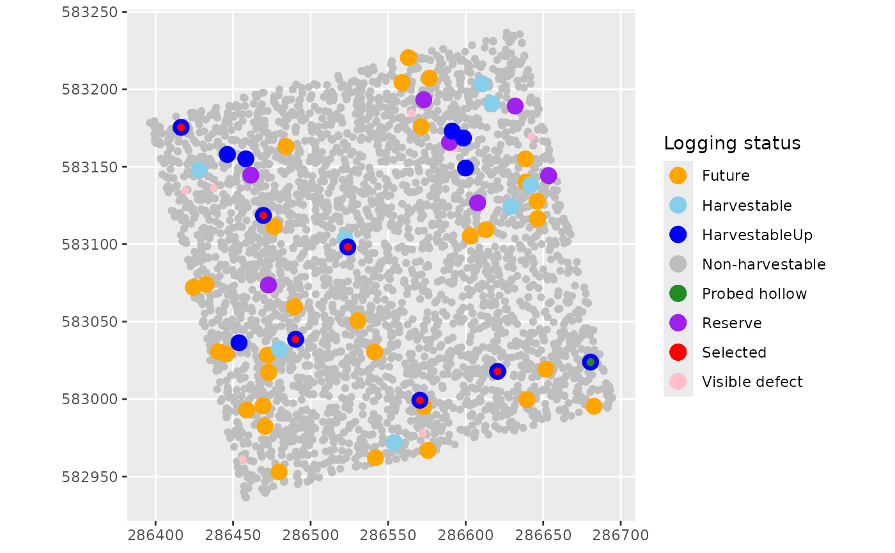

Tree selection (trees to be exploited, future and reserve trees)
Source:R/treeselection.R
treeselection.RdTree selection (trees to be exploited, future and reserve trees)
Usage
treeselection(
inventory,
topography,
speciescriteria,
scenario,
objective = NULL,
fuel = NULL,
diversification = NULL,
specieslax = FALSE,
objectivelax = FALSE,
MainTrails,
harvestablepolygons,
plotslope,
advancedloggingparameters = loggingparameters()
)Arguments
- inventory
input inventory (see the inputs formats and metadata in the
vignette) (data.frame)- topography
Digital terrain model (DTM) of the inventoried plot (LiDAR or SRTM) (
DTMParacou) (RasterLayer)- speciescriteria
Table of species exploitability criteria : species names, economic interest level, minimum and maximum felling diameter, in the same format as
SpeciesCriteria(data.frame)- scenario
Logging scenario: "RIL1", "RIL2broken", "RIL2", "RIL3", "RIL3fuel", "RIL3fuelhollow" or "manual"(character) (see the
vignette)- objective
Objective volume (m^3/ha) (numeric)
- fuel
Fuel wood exploitation: no exploitation = "0", exploitation of damage and unused part of logged trees for fuel = "1", exploitation of hollow trees, damage and and unused part of the log for fuel = "2"
- diversification
Possibility to log other species in addition to the main commercial species (species with a value of 2 for commercial in the
SpeciesCriteriatable) (logical)- specieslax
Allow diversification if the stand is too poor to reach the objective volume without diversification, = FALSE by default (logical)
- objectivelax
Allow exploitation in case of non-achievement of the objective volume (if stand too poor), = FALSE by default (logical)
- MainTrails
Main trails defined at the entire harvestable area (sf polylines)
- harvestablepolygons
Accessible area of the inventoried plot (default:
HarvestableAreaDefinition) (sf polygons data.frame)- plotslope
Slopes (in radians) of the inventoried plot (with a neighbourhood of 8 cells) (default:
PlotSlope) (RasterLayer)- advancedloggingparameters
Other parameters of the logging simulator
loggingparameters(list)
Value
A list with:
input inventory with new columns:
The exploitability criteria ("DistCrit", "Slope" (in radians), "SlopeCrit"), and if they are validated for each of the trees ("LoggingStatus").
The probability of a tree having visible defects ("VisibleDefectProba") and the visible defect trees ("VisibleDefect").
The trees selected for harvesting ("Selected"), if the Minimum Felling Diameter (MinFD) of their species has been raised ("Up"). The cumulative harvestable volume of harvestable trees("VolumeCumSum").
The probability of a tree being probed hollow ("ProbedHollowProba") and the probed hollow trees ("ProbedHollow").
Future and reserve trees (LoggingStatus = "future"/"reserve") (see the outputs metadata in the
vignette)
the objective volume (VO) for the entire plot
the harvestable volume with the initial criteria (HVinit) for the entire plot
6 layers of spatial points: harvestable, selected, future and reserve, hollow and fuel wood trees
Details
Trees will be designated as "harvestable" if they:
belong to species of 1st economic level (if no diversification) or 1st and 2nd level if (diversification)
have a DBH between MinFD and MaxFD.
not isolated ( >100m ('IsolateTreeMinDistance' in
loggingparameters)) from other individuals of the same species in the aggregative species case (SpeciesCriteria, 'Aggregative' column).on slopes < 22% ('TreeMaxSlope'in
loggingparameters)off the main trails.
Trees with visible defects are identified ('VisiblyDefectModel' in 'advancedloggingparameters' argument) among the trees with harvestable criteria and are therefore considered 'non-harvestable'.
If fuel = 2, the hollow trees (identified with the "RottenModel"
(loggingparameters)) will be harvested and are therefore
included in the objective volume. If fuel = 0 or 1, the hollow trees will
not be exploited, so the function looks for other trees to reach the
objective volume (if possible).
If the harvestable volume is higher than the objective volume, MinFD of the 1st economic rank species is increased. If this is not enough and if diversification is allowed, MinFD of 2nd economic level species is increased. Then, the trees to be harvested are chosen in decreasing order of volume, until the objective volume is reached.
If the harvestable volume is lower than the objective volume, diversification can be applied if it was not already applied ('specieslax') (trees of all commercial ranks are selected in decreasing order of volume until the objective volume is reached), or harvesting can continue despite an unreached objective volume, or be abandoned ('objectivelax')
Future trees are all trees satisfying the following conditions:
species of 1st economic rank
DBH between 35cm (default) ('FutureTreesMinDiameter') and the species MinFD or UpMinFD if it has been raised for its species.
Reserve trees are randomly chosen among future trees so that the number of reserve trees is equal to the number of harvested trees.
Examples
data(Paracou6_2016)
data(DTMParacou)
data(PlotSlope)
data(MainTrails)
data(HarvestablePolygons)
inventory <- addtreedim(inventorycheckformat(Paracou6_2016),
volumeparameters = ForestZoneVolumeParametersTable)
set.seed(2)
treeselectionoutputs <- treeselection(inventory,
topography = DTMParacou,
speciescriteria = SpeciesCriteria, objective = 10,
scenario = "manual", fuel = "2", diversification = TRUE, specieslax = FALSE,
objectivelax = TRUE, MainTrails = MainTrails, plotslope = PlotSlope,
harvestablepolygons = HarvestablePolygons,
advancedloggingparameters = loggingparameters())
#> As the harvestable volume (= 89.1m^3)
#> was higher (by 26.6m^3)
#> than the objective volume, it was necessary to increase the Minimum Falling Diameter (MinFD)
#> of all species. The objective volume has now been reached.
NewInventory <- treeselectionoutputs$inventory
NonHarvestable <- sf::st_as_sf(
dplyr::filter(NewInventory, LoggingStatus == "non-harvestable"),
coords = c("Xutm", "Yutm"))
Harvestable <- sf::st_as_sf(
dplyr::filter(NewInventory, LoggingStatus == "harvestable"),
coords = c("Xutm", "Yutm"))
HarvestableUp <- sf::st_as_sf(
dplyr::filter(NewInventory, LoggingStatus == "harvestableUp"),
coords = c("Xutm", "Yutm"))
Selected <- sf::st_as_sf(
dplyr::filter(NewInventory, Selected == "1"), coords = c("Xutm", "Yutm"))
Reserve <- sf::st_as_sf(
dplyr::filter(NewInventory, LoggingStatus == "reserve"),
coords = c("Xutm", "Yutm"))
Future <- sf::st_as_sf(
dplyr::filter(NewInventory, LoggingStatus == "future"),
coords = c("Xutm", "Yutm"))
ProbedHollow <- sf::st_as_sf(
dplyr::filter(NewInventory, ProbedHollow == "1"), coords = c("Xutm", "Yutm"))
VisibleDefect <- sf::st_as_sf(
dplyr::filter(NewInventory, VisibleDefect == "1"), coords = c("Xutm", "Yutm"))
library(ggplot2)
ggplot() +
geom_sf(data = NonHarvestable,
aes(colour = "Non-harvestable"), show.legend = "point") +
geom_sf(data = VisibleDefect,
aes(colour = "Visible defect"), show.legend = "point") +
geom_sf(data = Future,
aes(colour = "Future"), show.legend = "point", size = 4) +
geom_sf(data = Reserve,
aes(colour = "Reserve"), show.legend = "point", size = 4) +
geom_sf(data = Harvestable,
aes(colour = "Harvestable"), show.legend = "point", size = 4) +
geom_sf(data = HarvestableUp,
aes(colour = "HarvestableUp"), show.legend = "point", size = 4) +
geom_sf(data = Selected,
aes(colour = "Selected"), show.legend = "point") +
geom_sf(data = ProbedHollow,
aes(colour = "Probed hollow"), show.legend = "point") +
scale_colour_manual(values = c("Non-harvestable" = "grey",
"Visible defect" = "pink", "Harvestable" = "skyblue",
"HarvestableUp" = "blue", "Selected" = "red", "Future" = "orange",
"Reserve" = "purple", "Probed hollow" = "forestgreen")) +
labs(color = "Logging status")
